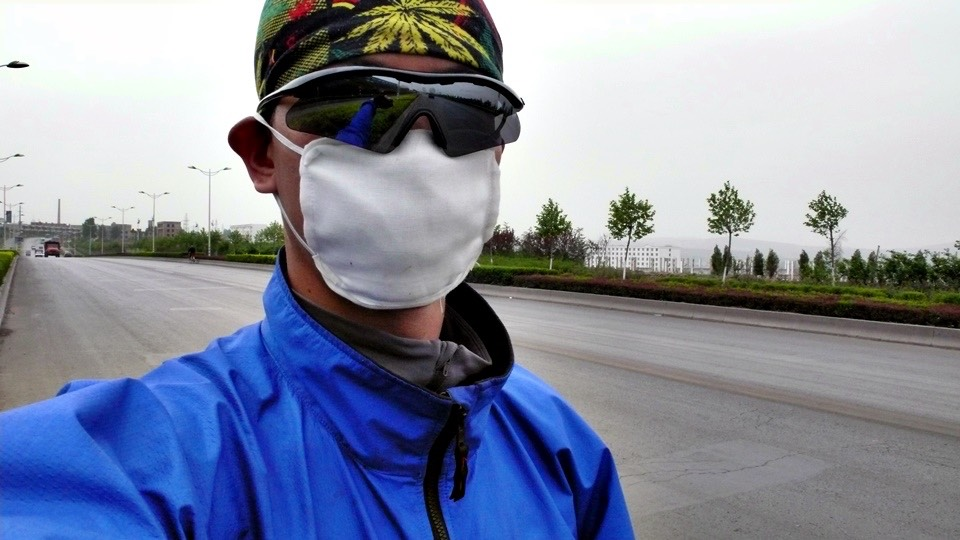
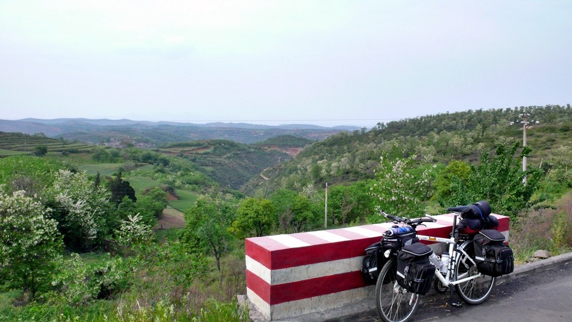
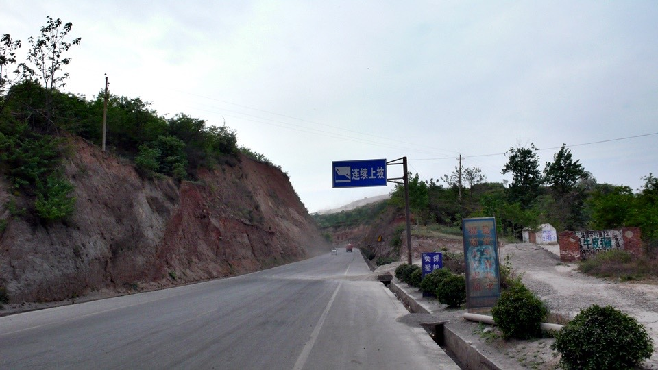
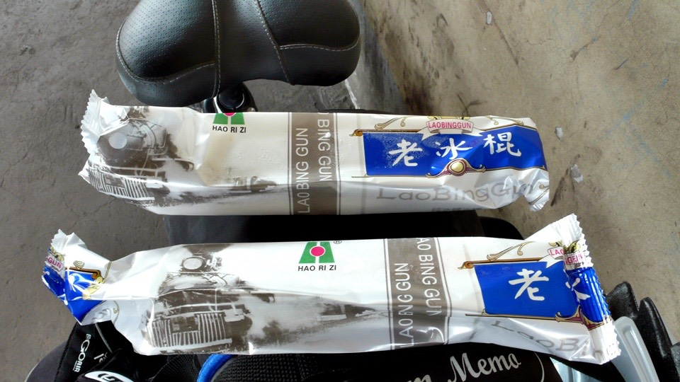
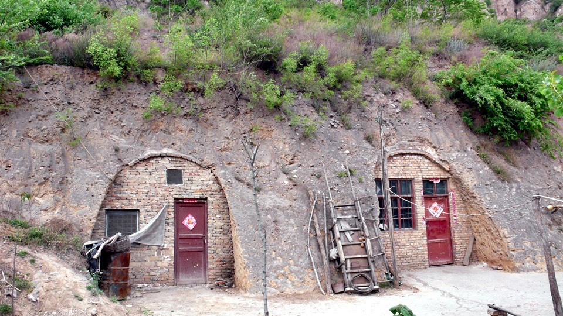
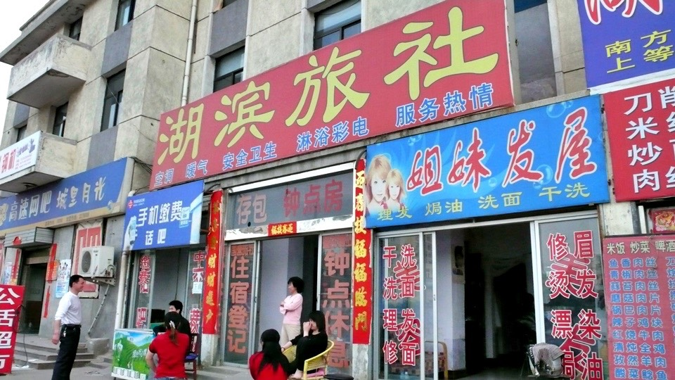
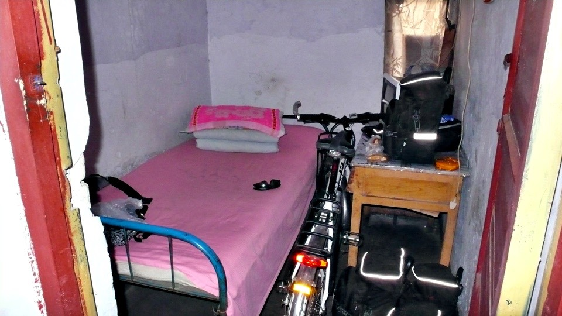

While I was leaving Luoyang city, a guy in his seventies who was on his bike to work, asked me where I was headed to today.
He said that he had biked from here to Xian, it was all uphill pedaling, very tough.
"No problem! "Whatever goes up must come down", I will be having a great time when I bike downhill then", I replied.
He smiled at me, and wished me luck.
I finally realized his mysterious smile--- at the end of the day.
I was definitely right about "whatever goes up must come down".
The only problem was, most of the time, TODAY, I was pedaling UP.
Overall, the route was about 4/5 uphill and 1/5 downhill. I was so exhausted.
I had to put on my face mask, which was part of my Desert Gear, today.
I decided that I have had enough of the dust raised from those crazy trucks and tractors for the past coupe of days.
Not to mention the nasty gnats flying into my nose to volunteer becoming part of the yucky mucus these days.
I just had to protect my face and my nose, RIGHT NOW.
This is what I look like: with my head wrap, sunglasses, and face mask.
Bet I can drag quite an attention if I show up like this in the bank???

Like I said at the very beginning, it was an "uphill day".
Whole day long, endlessly, I was climbing UP, UP, and UP, just like riding on the famous Suao Hualien Highway in Taiwan.

Uphill has no sympathy to the people biking on it. I had to take care myself, I had to find FOOD.
All I had left at this time was two jins (1 Jin is approximately 1.1 pound) of the "brick" biscuits, I need more.
As soon as I entered this grocery store, I gulped up 600 ml of milk.
I also bought one jin of suncake-like biscuits (8 of them), and a bag of candy for my snack.
Interestingly, I have noticed that everything in this store was covered with a layer of dust,
I wondered that was because of the windy situation in this area or---nobody ever came to this store???
Well, I know I will not trust the expiration date label—IF there is one, anyway.
I am sure everything here has an expiration date of 100 years, I will take my chances.

Eating the yummy suncake and riding on my bike, I continued the endless "moving up" adventure.
I don't mind the climbing that much anymore, but I really can't take the stinky smell filled in the air when I was passing somewhere.
What was THAT??? It didn't smell like any of the fertilizer for those crops. Maybe decomposition of some sort?
It was really disgusting. Even with my mask on, I had to hold my breath and pedaled as fast as I can.
After a while, I inhaled a tiny little bit of the air to make sure that stinky smell had gone, then I finally got to breath normally.
After finishing my fried rice lunch at Yima, I sat outside of that restaurant, having some tea and keeping my Dido company.
A little kid, who looked like 5-6 years old, came to stare at me.
I offered some candy to him, but he just ran away after I asked several times.
He probably thought I was a weirdo? A couple of minutes later, the kid came back on his own tricycle, showing me "See what I have?"
3:00 pm. A local gas station. Enjoy my popsicle.
It was just an ordinary popsicle, just made of water and sugar, but… man.. How can it be so delicious?

While I was enjoy my popsicle, the family worked in the gas station decided to have some conversation with me.
"Do you mind some company on the way to Urumuqi?" the Dad asked.
"It is not a good idea, because I got lost very often." I replied.
For some reason, the father interpreted my reply as a "YES".
So he asked his two sons to get the bikes out, and told them to take on adventure with me.
WAIT A MINUTE!!! NO KIDDING!!! I just stopped by to have some popsicless, please don't reward me with two little kids.
It was such a blast to sit in the shade and eating popsicles, compared to mountain biking under the sun, I was totally in heaven.
To extend my "happy hour", literally, I finished totally 4 popsicles, one after another. Then, well, time to go.
How interesting! I saw many doors IN the mountain. I wondered how they did that.
Did they really dig into the mountain and live there?Wish I can tour some of them somehow someday.

I am guessing the humidity is really low, I didn't sweat much at all during the past couple of days, and it was quite comfortable.
However, my knees felt the opposite. Finally, after almost 100 km of uphill,
the road turned to mostly downhill right before I approached Sanmenxia.
Just when I was leaving the mountainous area, a white van slowed down and waited for me.
A young guy asked me some typical questions like "Where are you from?", "Where are you going?" etc.
Afterwards, unbelievably, he gave me a cold beer.
Wow! The very first time that somebody rooted for me AND gave me a beer. What a treat!
I thanked and waved them goodbye, still overwhelming what just happened.
Then, "I should've asked if they have soda instead", I thought. I gulped the beer.
The first sign I saw after entering Sanmenxia was on a HOTEL.

I went in to check the rate immediately. The owner said "30 RMB", I thanked him and left.
He grabbed me back and dropped the price to 20 RMB.
I didn't like his attitude at all, but my legs were really sore from the "mountain biking" today.

Well, at least it was a clean room, with water to wash my clothes, outlet to plug in my gears, not too bad, really.
I was hoping to taste some local delight tonight, but obviously there was none.
So I fed my empty stomach with some pork/pickled mustard noodle soup at the next door.
I remembered the guy at the gas station saying I would be finishing half of my tour by the time I entered Xian—IF my destination was Urumuqi.
For real, from Beijing to Xian, is hardly 1/3 or even ¼ of my total trip planned in China. Still have a long way to go.
This hotel was facing the train station;
I can hear every single word from the PA system announcing the time and destination of each train.
It was non-stopping from 9:00 pm to mid-night; this station was really that busy?
Probably for the same reason, people checked in almost every hour after mid-night,
and I was woken up every single time by the noise they were making.
I stared at my watch and wondered how much time did I have left to sleep ZZZZZ
Thinking of those scrumptious sugar popsicles I had today, I can't believe how happy I was from just five cents!